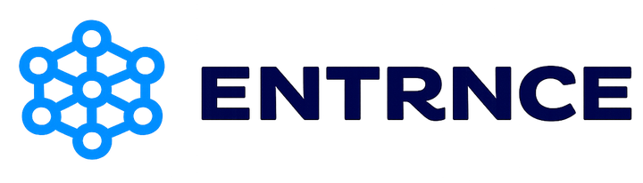
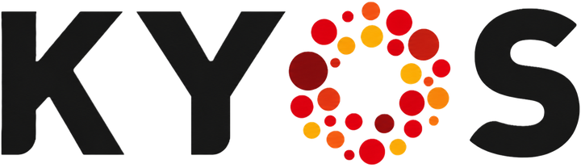
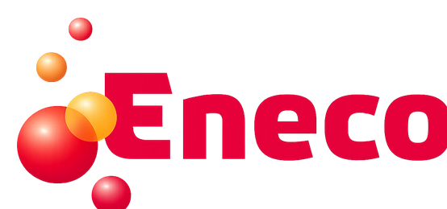
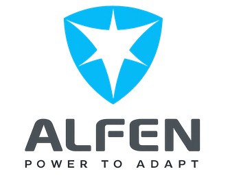

Consortium
Project partners
Academic, grid, market and technology partners working together.
Delft University of Technology
Delft University of Technology (TUD) leads the academic research within BATT-AI. TU Delft contributes advanced methods in AI-enabled optimisation, control of battery energy storage systems, and grid-congestion management, bridging fundamental research with real-world deployment.
University of Twente
The University of Twente (UT) contributes expertise in smart energy systems, power electronics, and data-driven grid solutions. Within BATT-AI, UT supports system modelling, validation, and the integration of AI-based tools into distribution-grid applications.
Stedin
Dutch distribution system operator (DSO). Stedin provides congestion-driven use cases, operational constraints, and validation feedback for grid services and market participation strategies.
ENTRNCE
Platform provider for local energy markets. ENTRNCE contributes market-access insights and practical interfaces for flexibility activation, supporting scalable congestion solutions at the distribution level.

KYOS
Energy analytics and decision-support partner. KYOS contributes quantitative methods for valuation and risk-aware optimisation of flexibility portfolios, aligning congestion objectives with market performance.

Eneco
Integrated energy company. Eneco supports the assessment of business cases and market integration perspectives, helping bridge technical solutions with scalable commercial deployment.

Alfen
Technology and system partner for grid infrastructure, energy storage, and EV charging solutions. Alfen contributes device- and system-level perspectives for deployable BESS operation under distribution-grid constraints.
